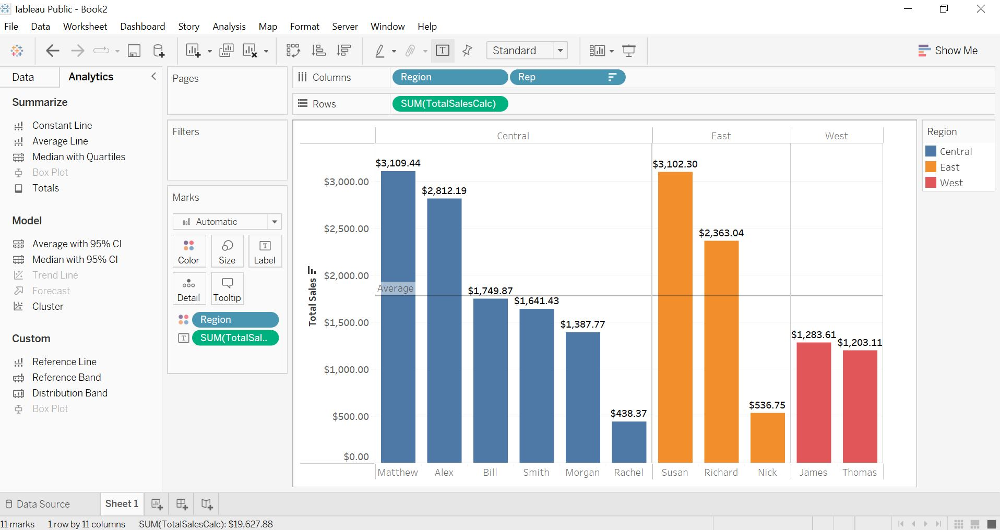
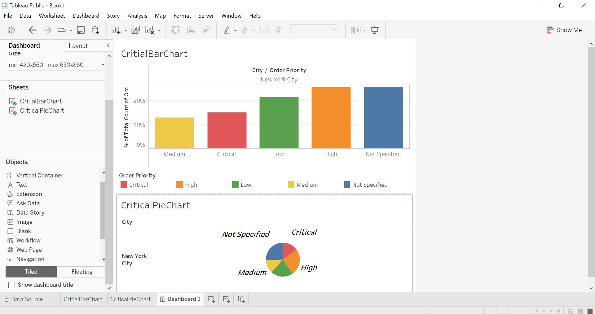

In this example, I was using the "OfficeSupplies" example database to begin with. My personal goal in this sheet was to determine which representative in each region made a specific sum of sales.
Following my completed calculations, I then wanted to clearly label each mark in bold lettering to show the total sales completed by each representative, and then use a trend line based on the average sales of all combined representatives calculated by table. Region was obviously categorized by color by dragging region to color in the marks card.
While this example may be simple, it is a crucial piece in constructing a functional dashboard and eventually, a story.

In this example, I simply used the "SuperStore-US 2015" database to create this dashboard visualization. I first created two sheets named "CriticalBarChart" and "CriticalPieChart" (This naming convention was used for the original purpose of finding the percent of use for critical order speeds out of a categorized list of order priorities, but my intentions changed) with a vertical container and two blanks to create the shown viz.
I would like to note one error, in that on the pie chart there is a missing label for low priority orders. This can easily be resolved by clicking "Show Mark Label" and then "Always" but it did not catch my eye until the moment I posted this here. It can also be noted that this visualization is quite crudely made and can be significantly improved upon (Hence the misspelling in the word "critical" in the title of the first sheet. If you couldn't tell, this is a small way to show my skill of observancy.).

As a quick bonus, if you right click on any page of this website and then click "view page source" I would like to mention that every aspect of this website is 100% created by myself. While it may not be perfect, it does show that I have clear knowledge of how to work with HTML and CSS in some ways. Thank you for taking the time to read this and hopefully I hear from you soon!